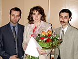

23 декабря 2004 г. в Смоленске состоялось награждение победителей областного конкурса молодых учёных за 2004 г. В номинации «Исследования в области естественных наук» победила работа «Разработка молекулярно-генетических методов для выявления и дифференциации представителей семейства Chlamydiaceae», которую выполнила ст.н.с. НИИ антимикробной химиотерапии, к.б.н. И.А. Эйдельштейн.
Конкурс молодых учёных был учреждён Департаментом Смоленской области по образованию, науке и молодежной политике в соответствии с постановлением Администрации Смоленской области от 02.03.2004 N 50 «Об учреждении областного ежегодного конкурса молодых учёных» в целях активизации научной деятельности в молодёжной среде, сохранения преемственности научных школ и развития кадрового научного потенциала, формирования навыков использования научных знаний в условиях рыночных отношений.
В конкурсе участвовали научные работы и исследования, авторами которых являются молодые учёные в возрасте до 36 лет, проживающие на территории Смоленской области. Всего на рассмотрение экспертного совета, состоящего из известных деятелей науки, была подана 81 заявка. Конкурс проводился по 3 номинациям: исследования в области гуманитарных наук, исследования в области естественных наук, инновационные научные проекты, направленные на решение задач социально-экономического развития Смоленской области.
23 декабря 2004 г. были подведены итоги конкурса. В номинации «Исследования в области естественных наук» победителем стала ведущий сотрудник НИИ антимикробной химиотерапии, кандидат биологических наук Инна Александровна Эйдельштейн, автор научной работы «Разработка молекулярно-генетических методов для выявления и дифференциации представителей семейства Chlamydiaceae»
Проблема, которой занимается И.А. Эйдельштейн, состоит в идентификации представителей семейства Chlamydiaceae и остаётся чрезвычайно актуальной, так как известные в настоящее время универсальные методы типирования хламидий с использованием ПЦР являются недостаточно чувствительными для их прямого обнаружения в клиническом материале или требуют использования трудоёмких процедур анализа ПЦР-продуктов. Разработанные и представленные в данной работе методы ПЦР с использованием семейственно-специфических праймеров к 5'-концевому участку гена ompA отличаются высокой чувствительностью, специфичностью и производительностью по отношению ко всем 9 видам семейства Chlamydiaceae по сравнению с предложенными ранее различными группами учёных методами универсального обнаружения представителей семейства Chlamydiaceae. Предложенные И.А. Эйдельштейн методы могут быть рекомендованы для использования в медицинских и ветеринарных лабораториях, занимающихся диагностикой хламидийных заболеваний.
В церемонии награждения победителей приняли участие начальник Департамента Смоленской области по образованию, науке и молодёжной политике Захаренков С.И., проректоры по научной работе и преподаватели ВУЗов г. Смоленска.
Сотрудники НИИ антимикробной химиотерапии и коллектив кафедры клинической фармакологии СГМА поздравляют Инну Александровну с победой в конкурсе и желают ей дальнейших творческих успехов!
Фотографии
(нажмите картинку для просмотра увеличенного изображения)
|  |
Зам. директора НИИАХ по научной работе,
профессор, д.м.н. Р.С. Козлов,
победитель конкурса молодых учёных
к.б.н. И.А. Эйдельштейн,
зав. лабораторией молекулярной микробиологии НИИАХ,
к.б.н. М.В. Эйдельштейн |